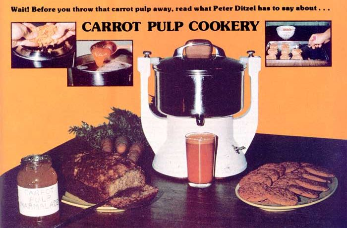

Carrot juice-as you know-is a very healthful and tasty drink. If you've ever made this beverage yourself, however, you've probably been amazed at how much pulp is left over after putting a few carrots through the juicer. The question is, what can you do with all those solids?
Until last year, the carrot pulp from my kitchen went straight to the compost heap (along with other kitchen scraps). But then I started thinking what a shame it was to have to waste all that food. After all, it was still orange ... which meant it was almost certainly still loaded with carotene (a vitamin A precursor) and other nutrients. "Wouldn't it be great," I mused, "if there were some way to put all that nutrition back into the family diet?"
Without further ado, I started to research some old recipes that seemed suited to my purpose ... and-after many hours in the kitchen (which is not my normal domain) and many failures-I finally came up with recipes for three surprisingly good carrot-pulp creations: a marmalade, a cake-like bread, and cookies:
3 oranges
4 cups of water
3 cups of carrot pulp
4 tablespoons of lemon juice
3 cups of honey
1/2 teaspoon of ground ginger
1 package of store-bought dried pectin
Peel all three oranges and cut the rinds into very narrow slices. Cook the slices in four cups of water until they're tender ... then let 'em sit at least seven hours (or overnight).
Once the peelings have had a chance to stand for seven (or more) hours, add the carrot pulp to them and boil for 10 minutes. Next, chop the oranges into a bowl and remove all seeds. Then introduce the oranges, lemon juice, honey, and ginger to the pulp/peelings mixture and boil for 20 minutes more.
If-after 20 minutes-the marmalade has begun to jell on its own ... terrific! Pour the mixture into hot, sterile canning jars and seal. Otherwise-if the jam hasn't thickened-you should stir in the dried pectin at this point. (I don't know why, but sometimes you'll need the pectin and sometimes you won't. All I can say is, when in doubt . . . use the pectin.) Boil the pectin-enriched marmalade for another 10 minutes, stirring constantly. Remove from heat, but continue to stir for an additional seven minutes. Finally, pour the marmalade into hot, sterile canning jars and seal.
2/3 cup of vegetable oil
3/4 cup of honey
2 eggs
1-1 /2 cups of carrot pulp
1-1 /2 cups of whole wheat flour
1 teaspoon of cinnamon
1 teaspoon of baking soda
1 teaspoon of sea salt (optional)
Mix the oil and honey together as well as you can, then add the eggs and mix again. Stir in the carrot pulp. Now add the remaining ingredients and mix well ... pour the resulting concoction into a greased loaf pan (measuring approximately 8-1/2" X 4-1/2" X 2-5/8") ... and bake in a pre-heated 350°F oven for 60 to 65 minutes.
3/4 cup of water
1 cup of carrot pulp
2/3 cup of vegetable oil
2/3 cup of honey
1 egg
2 cups of whole wheat flour
2 teaspoons of baking powder
1/ 2 teaspoon of sea salt (optional)
1 teaspoon of pure vanilla extract
1/2 teaspoon of pure lemon extract
Add the water to the carrot pulp in a small saucepan and cook over a very low heat for 10 minutes, stirring often to keep the pulp from scorching. Meanwhile, beat the oil and honey together in a bowl, then beat in the egg. Stir in the cooked carrot pulp, the flour, the baking powder, and-if you wish-the sea salt. Add the vanilla and lemon extracts, stir, and spoon the dough out onto a greased cookie sheet. Bake 12 to 15 minutes in a pre-heated 400°F oven. Happy eating!
|
 |
|
|